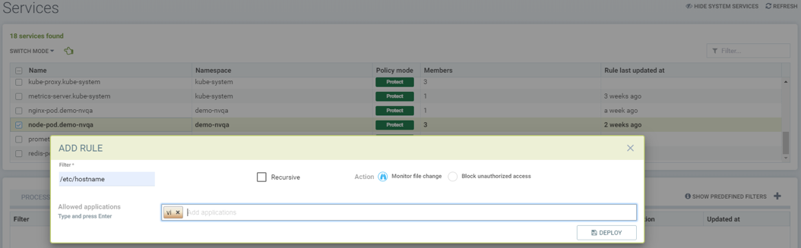
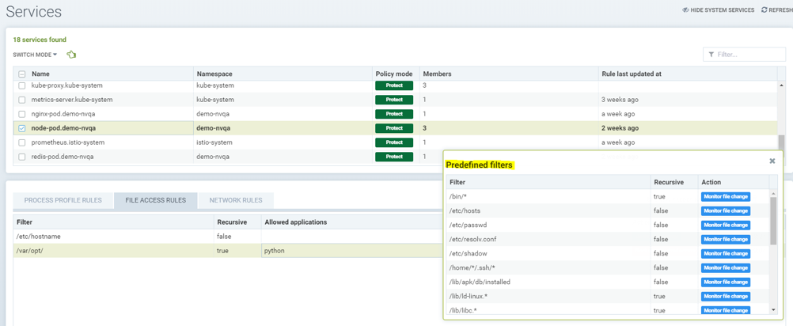

Règles d’accès aux fichiers
Stratégie : Règles d’accès aux fichiers
Il existe deux types de protections de processus et de fichiers dans SUSE® Security. L’une est le Zero-drift, où l’activité de processus et de fichiers autorisée est automatiquement déterminée en fonction de l’image du conteneur, et la seconde est basée sur un apprentissage comportemental. Chacune peut être personnalisée (règles ajoutées manuellement) si souhaité.
SUSE® Security dispose d’une détection intégrée de l’activité suspecte du système de fichiers. Les fichiers sensibles dans les conteneurs ne changent normalement pas à l’exécution. En modifiant le contenu des fichiers sensibles, un attaquant peut obtenir des privilèges non autorisés, comme dans l’attaque Dirty-Cow du noyau Linux, ou endommager l’intégrité du système, par exemple en manipulant le fichier /etc/hosts. La plupart des conteneurs ne fonctionnent pas en mode lecture seule. Toute activité suspecte dans les conteneurs, les hôtes ou le conteneur SUSE® Security Enforcer lui-même sera détectée et enregistrée dans les Notifications → Événements de sécurité.
Protection des fichiers Zero-drift
C’est le mode par défaut pour les protections de processus et de fichiers. Le Zero-drift permet automatiquement uniquement les processus qui proviennent du processus parent qui se trouve dans l’image originale du conteneur, et n’autorise pas les mises à jour de fichiers ou l’installation de nouveaux fichiers. En mode Découverte ou Surveillance, Zero-drift générera une alerte sur toute activité suspecte de processus ou de fichiers. En mode Protection, il bloquera une telle activité. Le Zero-drift ne nécessite pas que l’activité des fichiers soit ajoutée à une liste blanche. Désactiver Zero-drift pour un groupe fera en sorte que les règles de processus et de fichiers énumérées pour le groupe prennent effet à la place.
|
Les règles de processus et de fichiers énumérées pour chaque groupe sont toujours appliquées, même lorsque Zero-drift est activé. Cela offre un moyen d’ajouter des exceptions d’autorisation/refus aux protections de base de Zero-drift. Gardez à l’esprit que si un groupe commence en mode Découverte, des règles de processus et de fichiers peuvent être automatiquement ajoutées à la liste, et doivent être examinées et modifiées avant de passer aux modes Surveillance/Protection. |
La possibilité d’activer/désactiver le mode Zero-drift se trouve dans la console, dans les Groupes de Stratégie →. Plusieurs groupes peuvent être sélectionnés pour activer ou désactiver ce paramètre pour tous les groupes sélectionnés.
Protections de Fichiers de Base
Si une installation de paquet est détectée, une nouvelle analyse automatique du conteneur ou de l’hôte sera déclenchée pour détecter d’éventuelles vulnérabilités, SI l’analyse automatique a été activée dans les Risques de Sécurité → Vulnérabilités.
En plus de surveiller des fichiers/répertoires prédéfinis, les utilisateurs peuvent ajouter des fichiers/répertoires personnalisés à surveiller, et bloquer ces fichiers/répertoires pour qu’ils ne soient pas modifiés.
|
SUSE® Security alertes, et ne bloque pas les modifications des fichiers/répertoires prédéfinis ou dans des conteneurs système tels que ceux de Kubernetes. Le blocage n’est une option que pour les fichiers/répertoires personnalisés configurés par l’utilisateur pour des conteneurs non-système. C’est pour que les mises à jour régulières des dossiers système ou des configurations sensibles ne soient pas bloquées involontairement, entraînant un comportement erratique du système. |
Les fichiers et répertoires suivants sont surveillés par défaut :
-
Fichiers exécutables
-
Fichiers sensibles setuid/setgid
-
Bibliothèques système, libc, pthread, …
-
Installation de paquet, Debian/Ubuntu, RedHat/CentOS, Alpine
-
Fichiers système sensibles, /etc/passwd, /etc/hosts, /etc/resolv.conf …
-
Fichiers exécutables des processus en cours d’exécution
Les activités suivantes sont surveillées :
-
Fichiers, répertoires, liens symboliques (lien physique et lien symbolique)
-
créés, supprimés, modifiés (changement de contenu) et déplacés
Voici une liste de la surveillance du système de fichiers et de ce qui est surveillé (conteneur, hôte/nœud, et/ou SUSE® Security Enforcer container lui-même) :
-
/bin, /usr/bin, /usr/sbin, /usr/local/bin - conteneur, Enforcer
-
Fichiers avec attributs setuid et setgid - conteneur, hôte, Enforcer
-
Bibliothèques : libc, pthread, ld-linux.* - conteneur, hôte, Enforcer
-
Installation de paquet : dpkg, rpm, apk - conteneur, hôte, Enforcer
-
/etc/hosts, /etc/passwd, /etc/resolv.conf - conteneur, hôte, Enforcer
-
Binaires des processus en cours d’exécution - conteneur
Applications autorisées basées sur l’apprentissage comportemental en mode Découverte
En mode Découverte, SUSE® Security peut apprendre et mettre sur liste blanche des applications UNIQUEMENT pour des répertoires ou fichiers spécifiés. Pour activer l’apprentissage, une règle personnalisée doit être créée et l’Action doit être définie sur Bloquer, comme décrit ci-dessous.
Création de règles de surveillance de fichiers/répertoires personnalisées
Des règles d’accès aux fichiers personnalisées peuvent être créées pour des Groupes définis par l’utilisateur ainsi que pour des Groupes appris automatiquement.
Les utilisateurs peuvent ajouter de nouvelles entrées pour les règles de fichiers/répertoires.
-
Filtre : Configurer le fichier/dossier à protéger (les caractères génériques sont pris en charge)
-
Définir l’option récursive (si tous les fichiers des sous-répertoires doivent être protégés)
-
Sélectionner l’action, Surveiller ou Bloquer (voir Actions ci-dessous)
-
Entrer les applications autorisées (voir Note1 ci-dessous)

Opérations:
-
Surveiller les changements de fichiers. Générer des alertes (Notifications) pour tout changement
-
Bloquer l’accès non autorisé.
-
Service en mode Découverte : le comportement d’accès aux fichiers est appris (les processus/applications qui accèdent au fichier protégé) et ajouté aux Applications Autorisées.
-
Service en mode Surveillance : un comportement de fichier inattendu est signalé.
-
Service en mode Protection : un accès inattendu (lecture, modification) est bloqué. La création de nouveaux fichiers dans des dossiers protégés sera également bloquée.
-
|
Si la règle est définie sur Bloquer, et que le service est en mode Découverte, SUSE® Security apprendra les applications accédant au fichier et les ajoutera aux Applications Autorisées pour la règle. |
|
Les plateformes de conteneurs utilisant le pilote de stockage AUFS ne prendront pas en charge l’action de refus (blocage) en mode Protection pour la création/modification de fichiers en raison des limitations du pilote. Le comportement sera le même qu’en mode Surveillance, avec une alerte en cas d’activité suspecte. |
Ordre de priorité des règles d’accès aux fichiers
Un conteneur peut hériter de règles d’accès aux fichiers de plusieurs groupes personnalisés et de règles d’accès aux fichiers créées par l’utilisateur sur le groupe appris automatiquement.
Les règles d’accès aux fichiers sont priorisées dans l’ordre ci-dessous si le nom de fichier entre en conflit avec les règles d’accès prédéfinies du groupe appris automatiquement et l’héritage des règles de plusieurs groupes.
-
Règle d’accès aux fichiers avec accès bloqué (ordre le plus élevé)
-
Règle d’accès aux fichiers avec récursivité activée
-
Règle d’accès aux fichiers avec récursivité désactivée
-
Règle d’accès aux fichiers créée par l’utilisateur autre que les règles d’accès aux fichiers prédéfinies
Exemples
Affichage de la règle d’accès aux fichiers pour protéger le fichier /etc/hostname du service node-pod et permettre à l’application vi de modifier le fichier.

Affichage de la règle d’accès aux fichiers pour protéger les fichiers sous le répertoire /var/opt/ de manière récursive pour la modification ainsi que la lecture. L’application autorisée python peut avoir un accès en lecture et en modification à ces fichiers.

Affichage de la règle d’accès protégeant le fichier /etc/passwd, l’un des fichiers couverts par la règle d’accès prédéfinie, afin de modifier l’action d’accès pour la lecture et la modification. Cette règle personnalisée change l’action par défaut de la règle d’accès aux fichiers prédéfinie. L’application Nano peut avoir un accès 'lecture et modification' à ces fichiers. Il faut également ajouter l’application Nano (processus) en tant que règle 'autoriser' dans la règle de profil de processus pour que ce service exécute l’application Nano à l’intérieur du service (si elle n’était pas déjà autorisée), sinon le processus sera bloqué par SUSE® Security.

Montrant que l’application python a été apprise en accédant au fichier dans le répertoire /var/opt lorsque le mode service du nœud-pod était en mode Découverte. Cela ne se produit que lorsque la règle est définie sur Bloquer et que le service est en mode Découverte.

Montrant les règles d’accès aux fichiers prédéfinies pour le service node-pod.demo-nvqa. Cela peut être consulté pour ce service en cliquant sur l’icône d’information “show predefined filters” dans le coin droit de l’onglet des règles d’accès aux fichiers.

Montrant un événement de sécurité d’exemple dans Notifications → Événements de sécurité, signalé comme un refus d’accès au fichier lorsque la modification du fichier /etc/hostname par l’application python a été refusée en raison d’une règle d’accès au fichier personnalisée avec une action de blocage.


Protections de Fichiers en Mode Séparé
Les groupes de conteneurs peuvent avoir des règles de traitement/fichier dans un mode différent de celui des règles réseau, comme décrit ici.